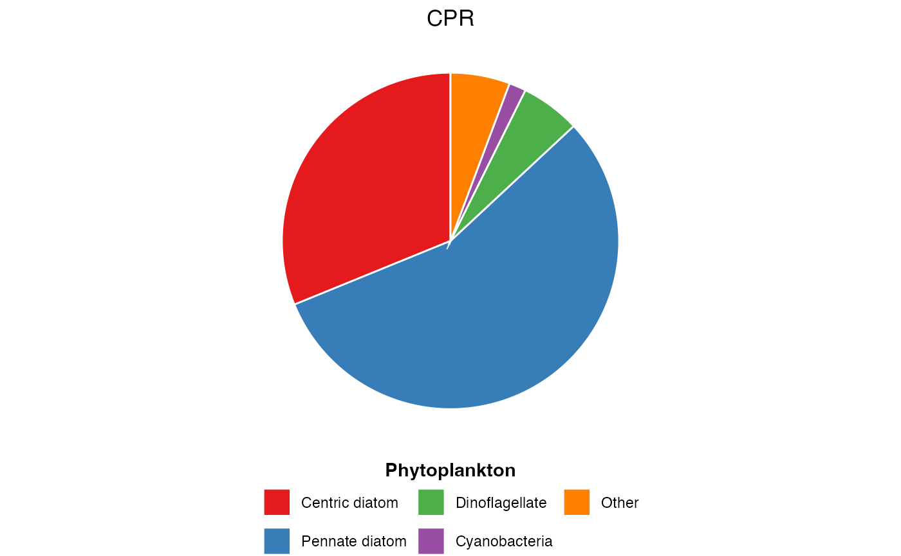

Visualise the relative proportion of plankton functional groups averaged across all samples. Useful for summarising community composition in a simple, accessible format.
pr_plot_PieFG(dat)Arguments
- dat
A dataframe from
pr_get_FuncGroups()containing functional group abundance or biomass data
Value
A ggplot2 object that can be further customised or saved with ggsave()
Details
Plot Structure
The pie chart shows:
Each functional group as a wedge
Wedge size proportional to mean abundance/biomass across all samples
Colours from the "Set1" palette for clear distinction
Legend below plot listing all functional groups
Interpretation
This plot provides a quick overview of which functional groups dominate the plankton community on average. Use this for:
Initial data exploration
Comparing overall community structure between surveys or regions
Educational presentations requiring simple visualisations
Limitations
Shows average composition only, hiding temporal variability
Cannot show changes over time (use
pr_plot_tsfg()for that)Works best with 5-10 functional groups; too many makes wedges hard to distinguish
See also
pr_get_FuncGroups()to generate input datapr_plot_tsfg()for time series of functional group composition
Examples
# Phytoplankton functional groups from CPR
dat <- pr_get_FuncGroups("CPR", "Phytoplankton")
plot <- pr_plot_PieFG(dat)
print(plot)

# Zooplankton functional groups from NRS
dat <- pr_get_FuncGroups("NRS", "Zooplankton")
pr_plot_PieFG(dat)